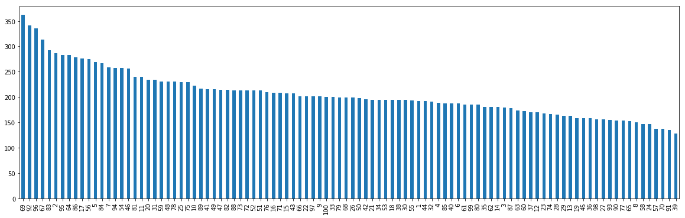
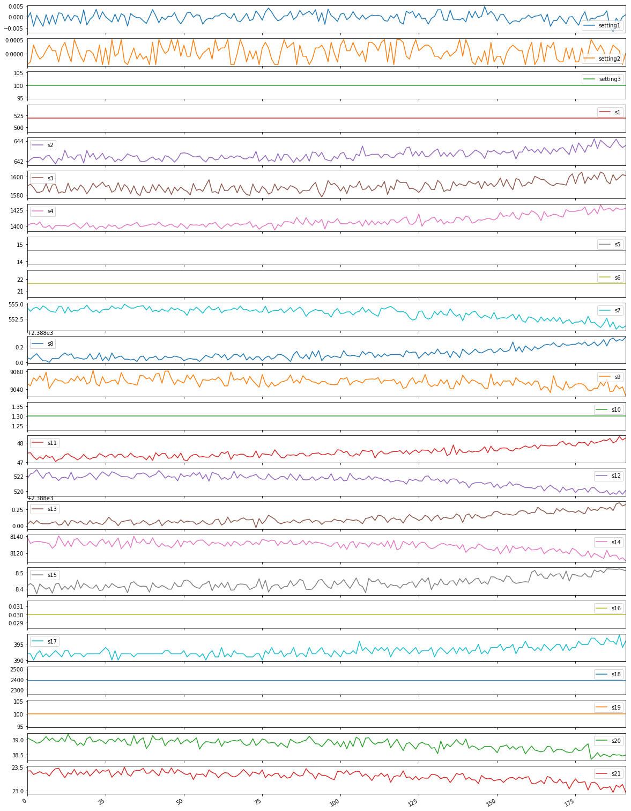
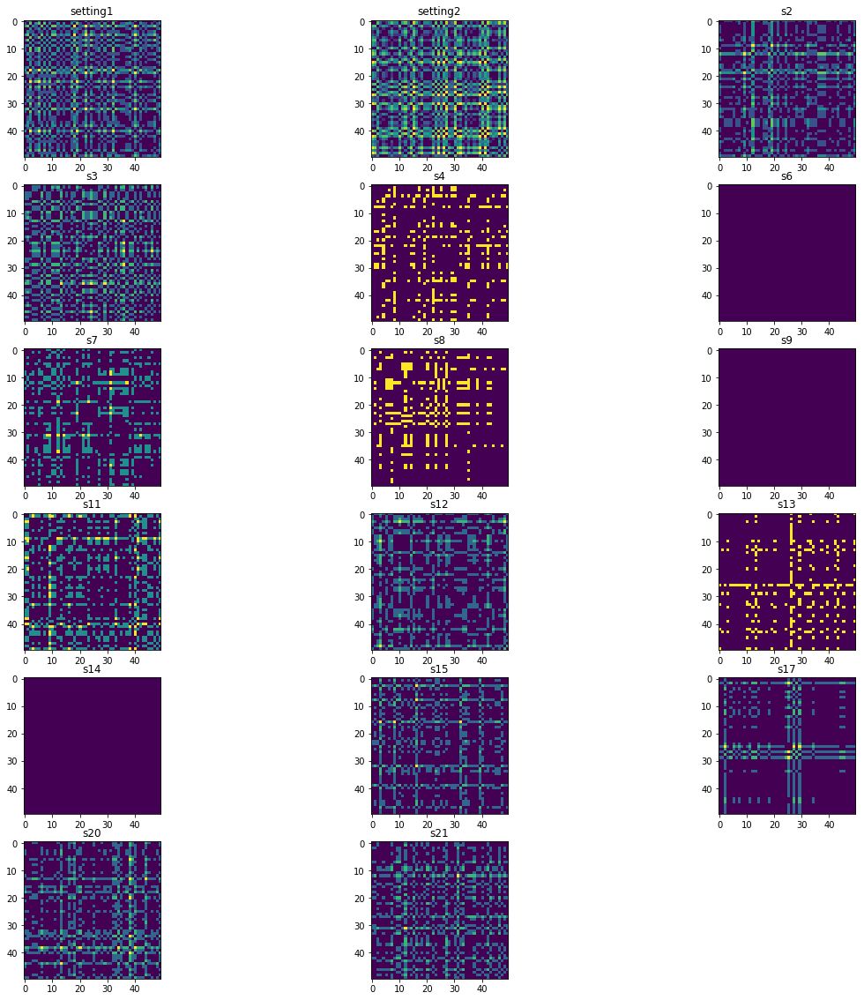
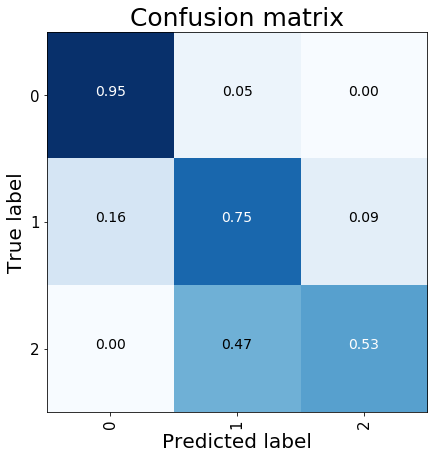

Python 3.7.3 (default, Mar 27 2019, 17:13:21) [MSC v.1915 64 bit (AMD64)]
Type "copyright", "credits" or "license" for more information.
IPython 7.4.0 -- An enhanced Interactive Python.
In [1]: runfile('C:/Users/leona/.spyder-py3/temp.py', wdir='C:/Users/leona/.spyder-py3')
Using TensorFlow backend.
WARNING:tensorflow:From C:\Users\leona\Anaconda3\lib\site-packages\tensorflow\python\framework\op_def_library.py:263: colocate_with (from tensorflow.python.framework.ops) is deprecated and will be removed in a future version.
Instructions for updating:
Colocations handled automatically by placer.
C:/Users/leona/.spyder-py3/temp.py:16: UserWarning: Update your `Model` call to the Keras 2 API: `Model(inputs=Tensor("in..., outputs=Tensor("de...)`
autoencoder = Model(input=x, output=r)
In [2]: runfile('C:/Users/leona/GitHub/MEDIUM_NoteBook/Remaining_Life_Estimation/Remaining_Life_Estimation.py', wdir='C:/Users/leona/GitHub/MEDIUM_NoteBook/Remaining_Life_Estimation')
#id: 100
(20631, 26)
medium working time: 206.31
max working time: 362
min working time: 128
#id: 100
(13096, 26)
(100, 1)
['setting1', 'setting2', 's2', 's3', 's4', 's6', 's7', 's8', 's9', 's11', 's12', 's13', 's14', 's15', 's17', 's20', 's21']
X_Train shape: (15631, 50, 17)
X_Test shape: (8162, 50, 17)
y_train shape: (15631, 1)
y_test shape: (8162, 1)
(15631, 3)
(8162, 3)



(15631, 50, 50, 17)
(8162, 50, 50, 17)
WARNING:tensorflow:From C:\Users\leona\Anaconda3\lib\site-packages\keras\backend\tensorflow_backend.py:3445: calling dropout (from tensorflow.python.ops.nn_ops) with keep_prob is deprecated and will be removed in a future version.
Instructions for updating:
Please use `rate` instead of `keep_prob`. Rate should be set to `rate = 1 - keep_prob`.
_________________________________________________________________
Layer (type) Output Shape Param #
=================================================================
conv2d_1 (Conv2D) (None, 48, 48, 32) 4928
_________________________________________________________________
conv2d_2 (Conv2D) (None, 46, 46, 32) 9248
_________________________________________________________________
max_pooling2d_1 (MaxPooling2 (None, 23, 23, 32) 0
_________________________________________________________________
dropout_1 (Dropout) (None, 23, 23, 32) 0
_________________________________________________________________
conv2d_3 (Conv2D) (None, 21, 21, 64) 18496
_________________________________________________________________
conv2d_4 (Conv2D) (None, 19, 19, 64) 36928
_________________________________________________________________
max_pooling2d_2 (MaxPooling2 (None, 9, 9, 64) 0
_________________________________________________________________
dropout_2 (Dropout) (None, 9, 9, 64) 0
_________________________________________________________________
flatten_1 (Flatten) (None, 5184) 0
_________________________________________________________________
dense_3 (Dense) (None, 256) 1327360
_________________________________________________________________
dropout_3 (Dropout) (None, 256) 0
_________________________________________________________________
dense_4 (Dense) (None, 3) 771
=================================================================
Total params: 1,397,731
Trainable params: 1,397,731
Non-trainable params: 0
_________________________________________________________________
None
WARNING:tensorflow:From C:\Users\leona\Anaconda3\lib\site-packages\tensorflow\python\ops\math_ops.py:3066: to_int32 (from tensorflow.python.ops.math_ops) is deprecated and will be removed in a future version.
Instructions for updating:
Use tf.cast instead.
Train on 12504 samples, validate on 3127 samples
Epoch 1/10
12504/12504 [==============================] - 121s 10ms/step - loss: 1.4091 - acc: 0.6808 - val_loss: 0.6076 - val_acc: 0.7352
Epoch 00001: val_acc improved from -inf to 0.73521, saving model to ./RUL_CNN.hdf5
Epoch 2/10
12504/12504 [==============================] - 75s 6ms/step - loss: 0.3726 - acc: 0.8365 - val_loss: 0.2929 - val_acc: 0.8628
Epoch 00002: val_acc improved from 0.73521 to 0.86281, saving model to ./RUL_CNN.hdf5
Epoch 3/10
12504/12504 [==============================] - 73s 6ms/step - loss: 0.2617 - acc: 0.8857 - val_loss: 0.2614 - val_acc: 0.8750
Epoch 00003: val_acc improved from 0.86281 to 0.87496, saving model to ./RUL_CNN.hdf5
Epoch 4/10
12504/12504 [==============================] - 77s 6ms/step - loss: 0.2351 - acc: 0.8972 - val_loss: 0.2384 - val_acc: 0.8906
Epoch 00004: val_acc improved from 0.87496 to 0.89063, saving model to ./RUL_CNN.hdf5
Epoch 5/10
12504/12504 [==============================] - 76s 6ms/step - loss: 0.2282 - acc: 0.8995 - val_loss: 0.2419 - val_acc: 0.9005
Epoch 00005: val_acc improved from 0.89063 to 0.90054, saving model to ./RUL_CNN.hdf5
Epoch 6/10
12504/12504 [==============================] - 79s 6ms/step - loss: 0.1948 - acc: 0.9139 - val_loss: 0.2439 - val_acc: 0.8945
Epoch 00006: val_acc did not improve from 0.90054
Epoch 7/10
12504/12504 [==============================] - 72s 6ms/step - loss: 0.1551 - acc: 0.9343 - val_loss: 0.2769 - val_acc: 0.8711
Epoch 00007: val_acc did not improve from 0.90054
Epoch 8/10
12504/12504 [==============================] - 73s 6ms/step - loss: 0.1356 - acc: 0.9449 - val_loss: 0.2704 - val_acc: 0.8983
Epoch 00008: val_acc did not improve from 0.90054
Epoch 9/10
12504/12504 [==============================] - 75s 6ms/step - loss: 0.1067 - acc: 0.9561 - val_loss: 0.3360 - val_acc: 0.8737
Epoch 00009: val_acc did not improve from 0.90054
Epoch 10/10
12504/12504 [==============================] - 73s 6ms/step - loss: 0.0960 - acc: 0.9641 - val_loss: 0.2782 - val_acc: 0.8897
Epoch 00010: val_acc did not improve from 0.90054
8162/8162 [==============================] - 28s 3ms/step
precision recall f1-score support
0 0.98 0.95 0.97 7426
1 0.55 0.75 0.64 676
2 0.34 0.53 0.41 60
micro avg 0.93 0.93 0.93 8162
macro avg 0.62 0.74 0.67 8162
weighted avg 0.94 0.93 0.93 8162

In [3]: